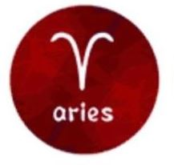

aries

Aries atau dalam Bahasa Indonesia Mesa, (Diserap dari Bahasa Sanskerta)
(♈) /ˈɛəriːz/ (yang berarti "Domba") adalah rasi Zodiak
pertama, yang mencakup 30 derajat pertama bujur langit (0°≤ λ <30°).
Di bawah zodiak tropis, Matahari transit di rasi ini umumnya
antara 20 Maret sampai 20 April setiap tahunnya.
kembali